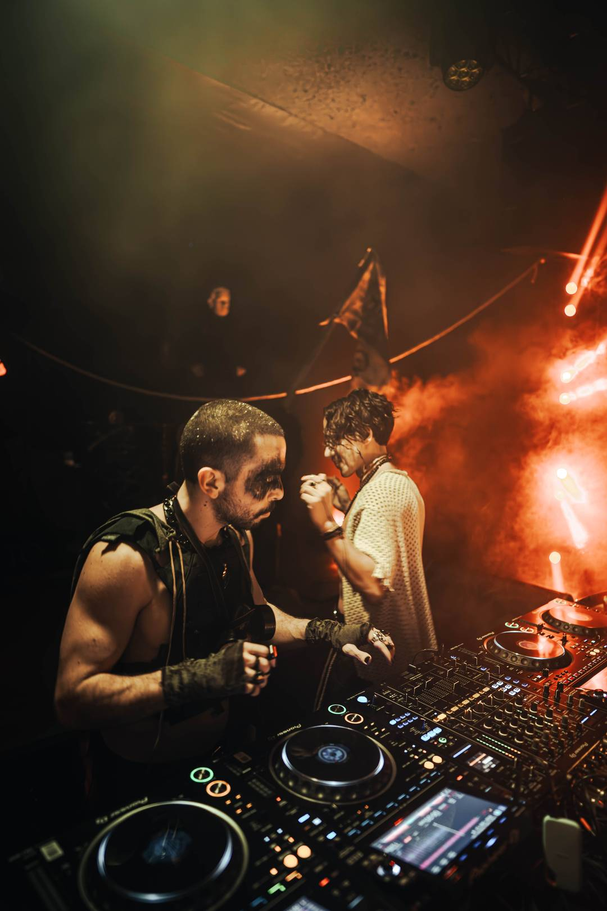
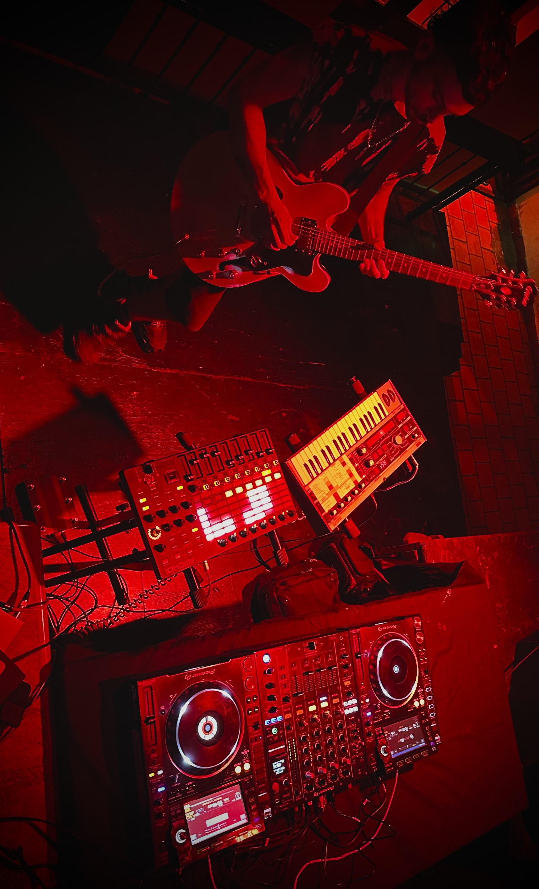
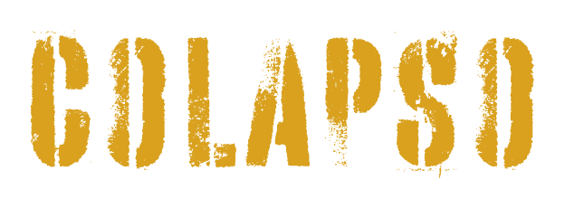

Diverso, versátil y algo pretencioso.

AURINAYA, dúo de electrónica. Desde 2020 toca en clubes nocturnos y organiza eventos propios.
AURINAYA · Sitioaurinaya.sekito.ar↗ AURINAYA · InstagramDúo de electrónica, desde 2020↗ DJ sets y live setsPlaylist en YouTube↗
Sets en vivo, o híbridos: se suman la guitarra eléctrica, los sintetizadores, las cajas de ritmos y máquinas, en formatos que combinan cabina, escenario y performance.
Construir experiencias colectivas: pistas, aulas, escenas.

SEKI · desde 2023
SEKITO · productora
COLAPSO · 2026 VARDITO · 2024La pista y el aula son el mismo terreno.